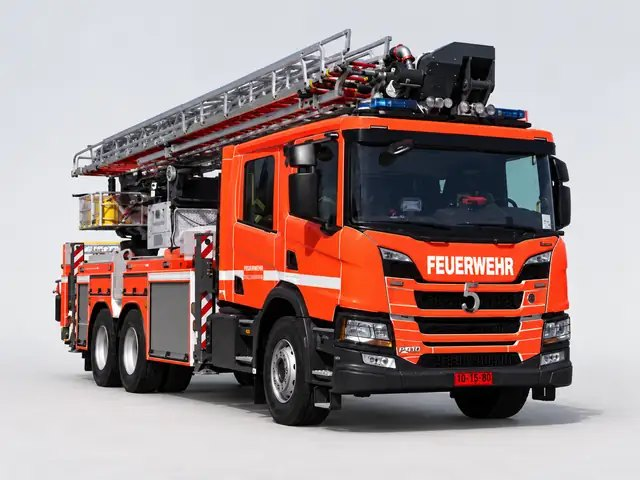

Plataforma aérea diseñada para operaciones de rescate de difícil acceso y para el control de incendios en edificios.
Apoya el rescate y el trabajo en altura, el acceso a lugares de difícil aproximación y el combate de incendios en altura.